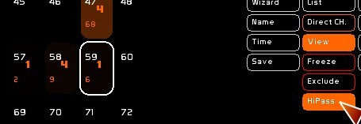
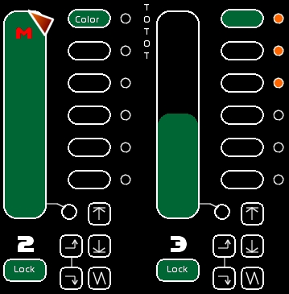
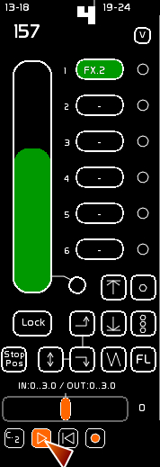
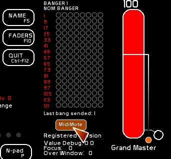

Table des matières
The 48 Masters and their interface
There are two spaces dedicated to the masters in White Cat:
- an extended version, called Fader space
- a summarized, windowed version called Minifaders
You access the first one by pressing [F10] and the second by [Shift-F10].


Fader space provides a more precise way to work with the masters. Minifaders provides an overview of all the masters. Lock presets and All At Zero commands are now located there as well. See: Minifaders window
This wiki page is dedicated to the extended version: Fader space.
Navigating thru the 48 Masters
To move the Fader space view, you need to use the handle.
This handle is divided into 2 areas:
- left area enables you to control Fader space horizontally.
- right area enables you to control Fader space vertically.
Moving among the 48 faders
There is a line of text just below the handle showing the faders in groups of six: 1-6, 7-12, 13-18… You can click on the range number to position the handle quickly, or you can drag the handle horizontally with the mouse to the desired position by clicking and holding on the left part.
To move Fader space up or down to get it out of the way so you can see the channel levels use the vertical handle (right part) and drag up or down with the mouse.
To close or open the Fader space window: click [Faders] or press [F10].
Midi assignment of the handle
The horizontal handle (left part) is remote-controllable in midi by using a Control Change signal which is typically assigned to a rotary potentiometer on whatever midi control surface you are using.

Understanding a Master

The 48 masters are called Faders in White Cat.
The main difference from the faders of a traditional theatre control board is that White Cat faders have a specific structure: they contain 6 docks.
It is in the dock that you can store/record:
- fixed lighting states
- dynamic lighting states
Depending on which dock is selected, the output from the fader will be different.
If Dock 1 contains channels 1 and 2 at 55% and 78% and dock 2 contains channels 3 and 4 at 98% and 100%, depending on your choice of dock, the output of the fader will be either 1 and 2 OR 3 and 4, but never both groups together.
This is the main goal of White Cat's fader structure.
A Fader consists of:
- a level bar (slider) to control its intensity with a description of the selected dock and a lock button
- 6 docks with the selected dock highlighted in a color.
- an LFO space (Low Frequency Oscillation provides a sinuous movement for the intensity) and commands for loop and flash
- an accelerometer which affects the LFO speed
Editing a Fader
Storing or modifying a fixed lighting state in a Dock
On the fly
To store/record a fixed lighting state:
- create your lighting state (see Channel Space), on stage or in Blind.
- click [STORE] or press [F1]
- click the dock oval where you want to store this lighting state
Modifying the lighting state in a dock:
- select channels and set them at the desired levels. Select only the channels you want to modify. Only selected channels will be modified, others will be untouched.
- click [MODIFY] or press [F2]
- click the dock oval to modify
Lighting states coming from the Faders Buffer (in orange) are not recorded in this manipulation. See the [REPORT] command below.
Mode HiPass: a discrete manner to modify channels from Faders
When you are constructing your lights with faders, it is possible to discreetly modify the results outputted from Faders, without having to search for the Fader.
It is the HiPass Mode.
[HiPass] enables you to modify any channel recorded on the fly inside a dock (but not dynamic contents or memories).
When you set [VIEW] ON, you can see which Fader is manipulating in a channel.
[HiPass] will help you to modify directly those channels inside the fader delivering the most important level.
- Set [HiPass] ON ( [View] will automatically be called, as it is calculating which Channel is controlled in by which Fader).
- Select some channels (mouse, keyboard)
- Modify their value by:
- arrows UP and DOWN
- third mouse button wheel
- level wheel from numpad ( mouse, midi, arduino, iCat)
- type a level and [ENTER]
Channel(s) will be modified in the dock outputting the highest value. Be aware, ADDING a channel will require that you to use [F2].
You are manipulating the content of a dock before the Fader level calculation, so this is a relative usage.

From a memory
It is possible to assign a previously recorded memory to a dock:
- type the memory number
- click [STORE] or press [F1]
- click the dock oval to store a link to the memory

If the memory is later destroyed, the dock will flash to warn you.
If a memory is later modified, you don't need to store it again in the dock. Your link is not to the lighting state itself but to the memory so it updates automatically if the original memory becomes changed.
The description of the dock is automatically set to the name of the memory.
Be aware !
About memory editing, they are enabled and can be modified by using the CueList (F9) along with dedicated keyboard shortcuts (Ctrl-F1 to over-record a memory on stage, Shift-F1 to create a new memory, etc…) please see Keyboard shortcuts).
You may not entirely understand the principle of memories as they work with CueList, which is the primary use for memories. Being able to load a memory into a dock is just an added plus, not the main purpose. To fully understand memories, start with their use in the CueList window.
Report: merging lighting states into a dock
[Report] enables you to store all levels coming from the Faders AND CueList, in a dock.
The Fader is automatically set at full and other faders that were active are set to zero.
The purpose of the Report command is to create lighting states with different faders and record them in another fader quickly. If you are in a concert situation, this is a good way to collect all your faders on one master at the end of the song, and it is useful if you like to work manually with faders while creating your lighting states.
- click [Report] or press [F3]
- click the dock where you want to store the merged cue
[Report] works only onstage, not in BLIND.
Clear a Dock
- Set Clear mode by clicking [CLEAR] or pressing [F4]
- Click the dock oval to erase
An empty dock appears with a [-] inside of it
Clearing a dock resets its internal times to the default, clears the contents (lighting states or dynamic links) and clears the description.

Giving a description to a Dock
- click [NAME] or press [F5]
- type your text
- click the dock oval to assign this text

(see Name window)
Clear a FADER and all its Docks
- Set Clear mode by clicking [CLEAR] or pressing [F4]
- Click the fader to erase it
Inspect the contents of a Dock
Click the [VIEW] button to enable it and click the mouse on a dock and its content and levels will display in Channel space.


Dynamic lighting states
In addition to channels and memories, you can also load dynamic content into a dock:
- a chaser
- a dock color (resulting from using the trichromy wheel)
- the result of Video Tracking (aka Air-Lighting)
- DMX IN from other software in art-net protocol
- dmx-in from your dmx card
Special behavior of a fader
A Fader may have special ways of working:
- it can remotely control volume, pan and pitch of an audio player
- it can be set in Direct-Channel mode (linking the fader to a special channel in the CueList space)
Direct Channel Mode
Direct Channel mode enables the fader (if the dock selected is assigned to Direct Channel) to directly control a channel, and to be controlled by it. This allows a 2-way communication between the manual lighting state and the CueList state. This is not a traditional lighting method, as we are assigning a channel to a dock where one becomes the master or slave of the other.
This was created at the request of a user to provide for the needs of a BCF2000:
“White Cat has a big advantage because of its midi capability. I can't use my BCF to manually control a channel recorded in the CueList, but I would like the faders on the BCF2000 to follow the movement of the channel so that after a cross-fade I can take manual control of it.”
Assigning a channel in Direct-Channel Mode to a dock

- Check to make sure the [Direct Ch] mode is ON
- select the channel
- Press [F1] or click [STORE]
- click the dock oval
Here, when the dock is selected, the fader follows directly the state of channel 47:

Series Assignment in Direct CH
0.8.2.3: It is possible to assign a series of channels by using the x12 mode:

- click a second time Direct CH
- select a channel
- click the dock to assign it
- the 11 next faders will be assigned in direct chan, with following channels
- this is a horizontal assignment method (docks)
Behavior of a fader in [Direct Ch] mode:
- The fader is set to the value of the channel when the channel is manipulated. This means it takes its value from the CueList buffer (in blue) On Stage (no blind) when in a cross-fade situation, or responding to levels set by typing, shortcuts, using up down arrows or the mouse wheel.
- when set in Midi-Out mode, the fader sends its value back to the BCF
- when you manipulate the fader with the mouse, midi or LFO, the value of the fader is sent directly to the channel, except if a cross-fade is currently happening.
- to modify its value during a cross-fade: select the channel and use the Up or Down arrow keys or the mouse wheel.
Lock: controlling many faders with one fader
It is possible to control many faders by manipulating one fader, using the LOCK function.
This function is of special interest when you are working manually and you want to fade down a group of faders simultaneously with the mouse. For this we need to transform the fader into what is called a master-fader.
When a fader is in Lock mode, its color will be green-blue.
- choose a master-fader by clicking [LOCK] any fader that is at 100%.
The master-fader will display a big M on it.
- click [LOCK] for each Fader you want to enslave to this Master-Fader. The level of the fader is then recorded.
To change its level in solo, you need to unlock it, move the fader, and then relock it. (Be aware that the master-fader should be at FULL when setting a new level).
For example, I'm setting a new master-fader at FULL: I have fader 6 at 35% on stage, fader 18 at 55% and fader 24 at 75%. By locking them, I can control all of them together proportional to the level of master-fader.
If 2 faders are at full on a Lock, the first one encountered in numerical order becomes the lock master.
Ex: 12- 25 - 36 - 48 are all at full and set to Lock. 12 is the lock master.

Lfo
LFOs enable you:
- to set a fader at full or at zero
- this action is based on a time setting, which allows the fader to fade up or down
- to loop this action (UP, DOWN and SAW)
- to link those actions to previous or next docks, enabling you to create a sequence, or a mini-chaser, jumping from dock to dock
You can edit the time setting of each dock by setting In and Out times as well as Delay In and Delay Out times.
Assigning a time to a Dock
To assign a time to a Dock, you will need to use the Time window.
- click [Time] or press [F6]
- move the wheel in (min/sec/tenth of a sec) mode
- select which times this will be assigned to: Delay In, Delay Out, Fade In and Fade Out.
- click the [AFFECT] button
- click the dock where you want to store those times
The Time that the selected dock has, appears above the accelerometer (and assuming that the accelerometer is in its center position, this will be what you set in the time window).
The In and Out delay times appear with the result of the transformation by the accelerometer .
Here the times shown are: Delay In:3 seconds, IN:2 seconds, Delay Out:3 seconds, OUT:5 seconds.;

USAGE OF LFOs
LFO are “Go-based”, and are started by clicking on the desired action. If an LFO action is already in progress, re-clicking it will stop it, leaving the fader at its current level.
LFO types
There are 3 types of LFO:
- UP (fade in)
- DOWN (fade out)
- SAW (fade in-fade out)

- UP:
If the fader intensity is below FULL, it will fade to FULL in the time recorded in the active dock, without consideration of its starting level.
- DOWN:
If the fader intensity is more than ZERO, it will fade to ZERO in the time recorded in the active dock, without consideration of its starting level.
- SAW:
If the fader intensity is below FULL, it will fade to FULL, then fade down to ZERO, in the time recorded in the active dock, without consideration of its starting level. If the fader intensity is at FULL, the fader will immediately fade down to ZERO, in the time recorded in the active dock, without consideration of its starting level. Movement stops when it arrives at ZERO.
Looping LFO
To the right of each dock there is a circle which is the looping control.

When this circle is selected the LOOP mode is set for this dock.
When the selected dock has its LOOP mode set to ON:
- the movement will repeat itself ( UP, DOWN, SAW).
- If the Loop is OFF, the movement will be done only once
- if the NEXT DOCK or PREVIOUS DOCK buttons are activated and LOOP is ON, at the end of the move, the next or previous dock will be selected.
This enables mini sequences, mini events, or mini-chasers, with 6 steps. For more complicated needs, please see Chasers or Banger, the events/automations manager.
On the fly commands for LFO and Flash button

- Loop One: this button allows you to set looping ON or OFF on the active dock
- Loop All: this second button allows you to set ALL dock LOOPING ON/OFF. Peculiar behavior: If only one of the 6 docks is in Looping mode, pressing this button will set all dock LOOPING OFF. Conversely, if none of the docks are set to LOOP mode, this will set them all to LOOPING ON.
- Flash: This allows you to flash the fader. If you have an LFO running at the same time, the process continues in the background, and the state of the fader is the same as if it didn't flash (important for rhythm purposes).
Those commands are all assignable in midi.
StopPos of an LFO

You will have noticed that the fades up and down are from 0 to Full.
It is possible to record for certain purposes (channel time effects or coding for audio levels) another position other than the 0/Full one.
The StopPosition button allows you to define a stop for the action of an LFO.
This blocking position stops an LFO fader with the following effects:
- this StopPosition doesn't affect the global time of a dock. If you define a StopPosition at 50%, half of the time the fader will be fading to the stopPosition, and the rest of the time it will stay there, blocked.
- when an LFO is in UP mode, StopPos is defined as high. Fader will not go higher than this StopPos.
- when an LFO is in DOWN mode, StopPos is defined as low. Fader will not go lower than this StopPos.
- when an LFO is in SAW, StopPos is defined as low. Fader will not go lower than this StopPos, and will go to FULL for the high position.
- there is only one StopPos per fader.
Setting the StopPos of a fader
Mouse:
- be sure that the most recent command string is clear [ESC]
- move the fader to the desired level
- click [STORE] or press [F1]
- click [StopPos]
Keyboard (blind mode):
- type the value
- click [STORE] or press [F1]
- click [StopPos]

Activating/Desactivating StopPos
Click the StopPos button to turn it On (red) or Off (white). If the StopPos of a fader is ON, the StopPos value appears in red on the slider.

Clear StopPos
- click [CLEAR] or press [F4]
- click [StopPos] button
Sequence and mini-chasers with NEXT DOCK and PREVIOUS DOCK

NEXT DOCK and PREVIOUS DOCK will work only if the LOOP function of the active dock is ON.
Passing from one dock to another will stop if a dock is encountered where the LOOP mode is turned OFF.
The UP-DOWN double-arrow button activates 2-way movement: when you reach dock 6, you go back to 5, when you arrive at dock 1 you go ahead to 2 and so forth.
Sequence

In this image, NEXT DOCK is ON.
Loop is engaged on Docks 1, 2, 4, 5 and 6.
- SAW is actually running, from the first Dock.
- We will go to 2nd Dock with a SAW movement, then to the 3rd Dock.
- At the 3rd Dock the SAW movement will play once.
- Then it will stop because the LOOP is off in the 3rd Dock .
With this LOOP OFF, you can set a little sequence of cross-fades that does not repeat.
Mini-Chaser
If you need to loop continuously through these 3 docks, which is to say you want only 3 steps for this mini-chaser:
- Activate LOOP mode on dock 3.
- click [CLEAR] or press [F4] and then click docks 4, 5 and 6
- Assign a ZERO seconds time for IN, OUT, and Delays IN and OUT on docks 4, 5, 6.
You can also decide on a wait time before repeating the movement in the 3 first docks by adding the desired time to one of the empty docks (and activate its loop mode).
Accelerometer
The accelerometer enables you to speed up or slow down or to pause the active dock—all this in real time.
- 0 value (middle position) is the normal timing as recorded in the dock.
- Going to left slows the movement (value from -1 to -63). Value -8 at the extreme left represents infinity, so it freezes the movement.
- Going to the right speeds up the movement.
Assignment of a curve to a fader
You can now assign one of the 16 curves from the patch window, not only to channels but also to faders.
By default, each fader uses curve 1.
Curve enabling:
- to obtain a less linear LFOing effect: make the curve rounder (more upwardly curved in the center) and let the fading down be steeper (more vertical) as it approaches 0.
- giving a less straight and mathematic feeling to the automated fades
- smoothing out the audio transitions (fade in/fade out) where the sound rarely accepts a linear transition. It is for this last purpose that curves may be assigned to a fader. See the section below on how to remote control audio with faders.
How to assign a curve to a fader:
- Edit the dedicated curve in the patch window (SHIFT-P) and choose something other than Curve 1
- Then type the number of the curve(1 to 16)
- click [STORE] or press [F1]
- Click the curve box to assign the curve. This box is located below the accelerometer

Embedding a chaser
When the selected dock contains a chaser, new buttons (PLAY, SEEK TO BEG, LOOP and AUTOLAUNCH) appear below the accelerometer. Those are the command buttons to remotely operate the embedded chaser.

Autolaunch enables you to control the play of the chaser from the fader's state.
If Autolaunch is ON:
- fader being at 0 is set up: Play of the embedded chaser
- fader is set at 0: Stop of the embedded chaser and Seek to beginning of the chaser, automatically

Remote controlling audio with lighting faders
It is possible to assign one of the 3 controls of an audio-player to a dock:
- volume
- pan
- pitch
The fader color turns blue. If the dock is selected, the fader will override the incoming Volume/pan/pitch midi signals sent to the player. This is also the case for the banger: The banger will not be able to manipulate the Volume/pan/pitch and you will have to adjust the position of the fader if the selected dock controls one of the three audio settings.
See AudioPlayers

For sound purposes, please assign a rounded curve to the fader as this will really be much nicer.
Midi Assignment
You can control many things with midi:
- the fader
- you can jump from dock to dock (Dock +/ Dock -) by assigning dock 1 and dock 2 to midi control.
- accelerometer
- LFO functions: UP, DOWN, SAW, NEXT DOCK, PREVIOUS DOCK, UP-DOWN, STOP POS, LOOP ONE, LOOP ALL and FLASH
- chaser embedded commands: PLAY, SEEK TO BEG and LOOP
See: Midi Configuration and Midi Assignments
Sending midi
By selecting this circle you can send a signal from the fader to the midi output port.

This allows you to manually control a cross-fade in another software program, for example a video software program or you can change a sound level in SeqCon or you can work manually in 2-way communication with a BCF2000 using the mouse and automations, without worrying about refreshing the midi device…
MIDI MUTE (local)
(version 0.8.2 )
By enabling this button, you are muting the specific midi entry of this fader, and printing to screen the midi level assigning it.
If you do not own a motorized control surface, this option will help you to retouch your midi faders if your midi has a different level than in the software. This different level in White Cat may come from a Banger, LFOsn etc… Using midi mute you will avoid visible jumps of level between the hardware and the software.

By enabling Midi MUTE (général) you will activate all MIDI MUTE (local) in White Cat.
There are special options to easily automute or autodemute midi input, see Midi Configuration and Assignments. These options will make it easier for you to handle your midi.

Shortcut for recording with midi, midi do-command button (midi IN) for live

The midi do-command button is the small square button with a downward arrow [v] just above the looping buttons.
If you work with a midi device, it is possible to simplify the following manipulations:
- [F1] [STORE] to a dock
- [F2] [MODIFY] to a dock
- [F3] [REPORT] to a dock
- [F4] [CLEAR] to a dock
- [F5] [NAME] to a dock
- Time assign to a dock (Affect being selected)
Sending a midi signal to this button confirms the chosen operation in the active dock of the fader and so replaces a combination of:
-[F1] pressed - selecting the dock - confirming
by
-[F1] pressed - select and record the active dock of the fader
Assigning a midi command to the midi do-command
- Open the [CFG_MENU]
- Select the [MIDI_CFG] tab
- Choose the [MIDI AFFECTATION] page
- Choose mode (1/1 or x8)
- Push the button on the midi control surface
- Click in White Cat on the midi do-command button